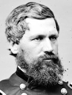

|

|

|
|
|
Major General in the Civil War, Commissioner of the Freedman's Bureau,
and Medal of Honor winner Oliver Otis Howard was born in Leeds, Maine on
November 8, 1830. Graduating from Bowdoin College in 1850, Howard also
attended the United States Military Academy at West Point, where he
taught mathematics until 1861. A strikingly handsome man, Howard served
as colonel of the 3rd Maine Infantry at Bull Run, and then was promoted
to brigadier general and assigned to the II Corps in the Army of the
Potomac. Accompanying General McClellan on the Peninsular Campaign, he
lost an arm fighting in the battle of Fair Oaks on May 31, 1862.
Returning to duty in time to fight at Antietam, Howard distinguished
himself enough to be appointed, at age thirty-two, major general in
command of the XI Corps. Howard's leadership was criticized in the two
important battles of Chancellorsville, in May of 1863, and at
Gettysburg, in July of the same year. At the former, Howard's evident
inattentiveness led to a rout of his men by Stonewall Jackson's famous
flank attack, and was a major factor in the devastating defeat of the
Union Army.
After the death of General John Reynolds, Howard was in command of
all Union forces at Gettysburg, Pennsylvania on the afternoon of July 1,
1863. Outnumbered and increasingly outflanked by the Confederates,
Howard made a number of ill-advised decisions that resulted in the
collapse of the IX Corps, and then the rest of the Federal forces on Oak
Ridge. Driven back through the town to Cemetery Hill, thousands of
panicked soldiers were re-formed by Howard and others for a new stand
against their attackers. Howard subsequently claimed credit for the
excellent Union defensive position along Cemetery Hill and Ridge,
although the new commander on the field, General Winfield Scott Hancock,
disputed this. The following September, Howard was sent to the western
army, where he was a corps commander under General Ulysses S. Grant and
General William T. Sherman in several notable battles, including
Chattanooga. Sherman appointed Howard commander of the Army of the
Tennessee before the march through Georgia and the Carolinas. Despite
his high rank and continued advancement, Howard was never particularly
well regarded either by his men or his peers, and was judged at best a
mediocre general.
After the War, Howard continued to serve the country. A devout
Christian, and a strong supporter of African-American freedom and
advancement, Howard was singled out by President Lincoln to head the
newly created Freedmen's Bureau in 1865. Howard had a strong vision for
the Bureau that included providing education, protection, and economic
security in the form of land for the masses of freed people in the
South. Disappointed by the lack of enthusiasm and support from the
Johnson Administration, Howard struggled to maintain the integrity of
the Bureau's work against a hostile and oftentimes violent environment
in the Southern states. His administration was attacked for inefficiency
and some of his financial dealings were subject to Congressional
investigations. Despite immense difficulties, the Bureau under Howard's
direction was able to establish and support schools and provide some
protection for black freedom through its system of courts. Howard
personally expanded opportunities for African Americans when he helped
to found Howard University, and becoming its first president in 1869,
and serving in that capacity until 1874. Later, he also founded Lincoln
Memorial University in Harrowgate, Tennessee.
The demise of the Freedmen's Bureau in the early 1870s brought
Howard, still in the regular army, out West again, this time to serve in
the frontier wars against the Indians. He was peace commissioner to the
Apaches, and in 1877 led the campaign against Chief Joseph and the Nez
Perce, earning criticism for his inept handling of men and supplies.
Before Howard ended his military career in 1894, he served as
superintendent of West Point and commanded the Division of the East. An
active supporter of the Republican Party, of educational and
philanthropic organizations, and a popular speaker on the lecture
circuit, Howard kept himself busy in retirement. He was an accomplished
writer, and published widely on many military and historical topics.
Oliver Otis Howard died on October 26, 1909 in Burlington, Vermont.
Source: Joan Waugh, ed., Facts on File Encyclopedia of American
History: Civil War and Reconstruction, 1856 to 1869 (New York: Facts on
File, 2003), 173-74.
|